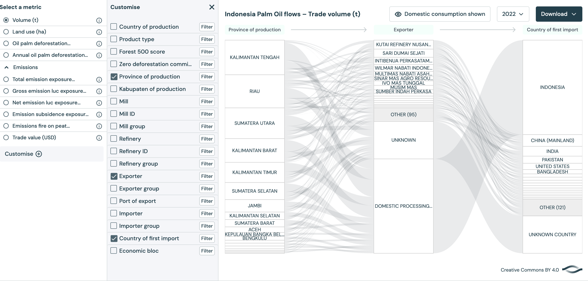
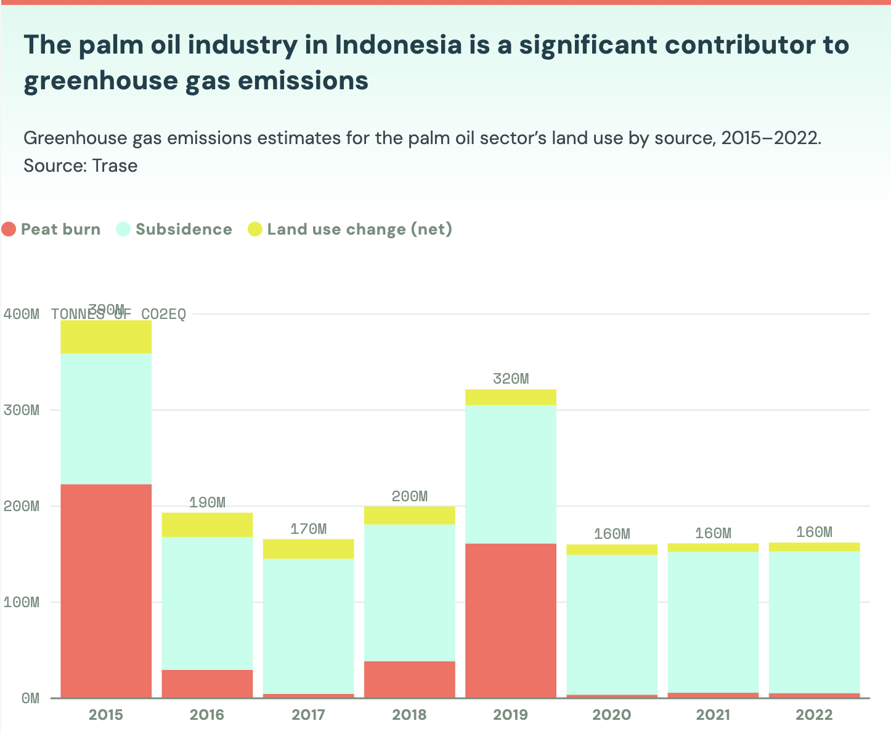
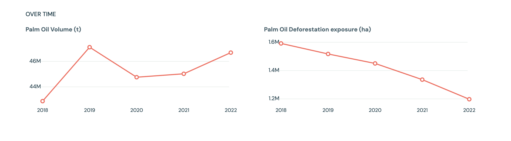

From plantation to product
Palm oil does not stay in the forest.
Once palm oil enters the supply chain, rainforest loss becomes harder to see. It moves through provinces, refiners, exporters, domestic processors, and importing countries before becoming part of food, cosmetics, soap, and household products.

The product is where distance begins.
A cookie, shampoo bottle, or bar of soap does not look like a rainforest. That distance is part of the problem. Palm oil is widely used because it is cheap, efficient, and useful in processed foods, personal care products, cosmetics, and household cleaners.[1]
The deeper question is not whether one product destroys one forest. It is how a global commodity system turns land into an ingredient. Palm oil makes orangutan habitat loss difficult to see because the chain between forest and product is long, technical, and divided across many actors. Production happens in one place, processing may happen somewhere else, and consumption happens somewhere else again.
Supply chain evidence
The flow begins in forest regions, then disappears into companies and markets.
This Trase flow chart follows Indonesia palm oil in 2022 by volume, moving from province of production to exporter and then to country of first import.[2] The first column matters: Kalimantan Tengah, Riau, Sumatera Utara, Kalimantan Barat, and Kalimantan Timur appear as major production provinces. These are not just administrative names. They are landscapes where forest, plantation, infrastructure, and habitat issue intersect.
The middle column shows exporters such as Kutai Refinery Nusantara, Sari Dumai Sejati, Intibenua Perkasatama, Wilmar Nabati Indonesia, and other corporate actors. This is where the supply chain becomes harder to trace emotionally: the orangutan disappears from view and is replaced by refinery names, exporter groups, and trade categories. The final column shows Indonesia as the largest country of first import, followed by China and India. This does not mean palm oil simply stops in Indonesia. It often enters domestic processing before being reworked, consumed locally, or re-exported into global markets.


Land use and climate
Palm oil is also a climate story.
The greenhouse gas chart shows emissions linked to land use in Indonesia’s palm oil sector from 2015 to 2022. According to Trase, peatland subsidence and fires on drained peatlands were responsible for nearly 92% of the palm oil sector’s average annual greenhouse gas emissions.[5] This is important because peatlands store large amounts of carbon. When they are drained, burned, or converted, the damage is not limited to the cleared area itself.
For orangutans, this adds another layer to habitat loss. Deforestation removes forest directly, but emissions also contribute to climate stress that can reshape ecosystems over time. Heat, drought, fire risk, and changing rainfall patterns can affect the forests that remain. In this sense, palm oil does not only transform land into plantations; it can also contribute to broader climate conditions that make remaining habitats more fragile.
Volume and exposure
More palm oil does not always mean more newly exposed deforestation.
The contrast charts show two movements between 2018 and 2022. Palm oil volume rises overall, with a peak in 2019, a dip in 2020, and growth again by 2022. At the same time, palm oil deforestation exposure declines steadily from around 1.6 million hectares in 2018 to about 1.2 million hectares in 2022.[2]
This contrast suggests that palm oil production can grow while measured deforestation exposure falls, possibly because of policy pressure, sourcing changes, certification, enforcement, or production shifting toward already-cleared land. But this does not make palm oil impact disappear. A lower exposure number can still rest on landscapes already transformed by earlier deforestation. The chart shows progress and limitation at the same time: supply chains can change, but the damage already built into the landscape does not automatically reverse.

This is what the Anthropocene looks like at the scale of a product.
The Anthropocene can sound huge and abstract: humans as a force changing the Earth. Palm oil makes that idea concrete. Forests are cleared, replanted, processed, shipped, and absorbed into everyday commodities. Human economic activity does not simply use nature; it redesigns landscapes around production.
Elizabeth Kolbert describes the Anthropocene as a period when human activity leaves lasting marks on the planet, from altered carbon cycles to changed species distributions and accelerated extinction rates.[3] Palm oil shows this through land. A rainforest becomes a plantation. A habitat becomes an input. A species’ future becomes tied to global demand.
Media framing
A bedroom, a product, and a rainforest.
The video “Rang-tan” begins with a child finding an orangutan in her bedroom. The scene works because it collapses distance: the rainforest is no longer far away, and the orangutan is no longer only an animal in a documentary. The child’s room becomes a place where consumer life and habitat loss meet.[4]
The video explains that palm oil is found in common products and links that demand to forest destruction. Its value is not that it gives every detail of the supply chain, but that it makes the first connection clear: what looks ordinary at home can be tied to land clearing elsewhere. After that connection is made, data from Trase and forest-loss maps can show the larger system behind the story.

A plantation is productive, but not equivalent to a forest.
Oil palm plantations produce value: oil, export revenue, industrial ingredients, and cheap materials for global consumer goods. But productivity is not the same as ecological richness. A plantation is organized around one crop; a rainforest is made of many species interacting across layers, seasons, and habitats.
This difference is central to biodiversity loss. The land is not only changed visually. It is changed in what it can support. Orangutans may sometimes enter plantation areas, but plantations cannot replace the connected, food-rich forests needed for long-term survival.
From product to responsibility
Knowing the chain changes the question.
The issue is not solved by individual guilt. The more useful question is how consumers, companies, governments, and public pressure can make hidden supply chains harder to ignore. The next page turns from awareness to action.
Continue to What Now?